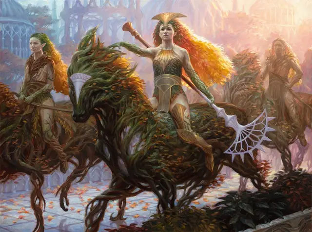

Дриада Конклава
Conclave Dryad
Средняя Фея, законно-добрая

Класс Доспеха 16 (природный доспех)
Хиты 143 (22к8 + 44)
Скорость 30 футов
| мод | спас | ||
|---|---|---|---|
| СИЛ | 12 | +1 | +1 |
| ЛОВ | 19 | +4 | +4 |
| ТЕЛ | 14 | +2 | +2 |
| мод | спас | ||
|---|---|---|---|
| ИНТ | 19 | +4 | +8 |
| МДР | 20 | +5 | +9 |
| ХАР | 21 | +5 | +9 |
Навыки Восприятие +9, Магия +8, Природа +8
Чувства тёмное зрение 60 футов, пассивное Восприятие 19
Языки Общий, Сильван, Эльфийский
Опасность 9 (5000 опыта)
Бонус мастерства +4
Особенности
Врожденное колдовство. Базовой характеристикой дриады является Харизма (Сл спасброска от заклинаний 17). Дриада может накладывать следующие заклинания, не нуждаясь в материальных компонентах:
• Неограниченно: искусство друидов [druidcraft]
• 3/день каждое: рассеивание магии [dispel magic], опутывание [entangle], рост растений [plant growth], шипы [spike growth]
• 1/день каждое: лунный луч [moonbeam], цепкая лоза [grasping vine], терновая стена [wall of thorns]
Сопротивление магии. Дриада совершает с преимуществом спасброски от заклинаний и других магических эффектов.
Разговор с животными и растениями. Дриада может общаться с животными и растениями, как если бы они и дриада говорили на одном языке.
Действия
Мультиатака. Дриада совершает три атаки, используя посох из виноградной лозы, длинный лук или и то, и другое.
Посох из виноградной лозы. Рукопашная атака оружием: +9 к попаданию, досягаемость 5 фт., одна цель. Попадание: 12 (2к6 + 5) дробящего урона. Если цель — существо, оно должно преуспеть в спасброске Ловкости Сл 17, иначе оно будет опутано скручивающимися лианами на 1 минуту. Цель, опутанная таким образом, может действием совершить проверку Силы (Атлетика) или Ловкости (Акробатика) Сл 17, оканчивая эффект на себе в случае успеха.
Длинный лук. Дальнобойная атака оружием: +8 к попаданию, дистанция 150/600 футов, одна цель. Попадание: 8 (1к8 + 4) колющего урона.
Призвать скакуна (1/день). Дриада волшебным образом вызывает скакуна, который появляется в свободном пространстве в пределах 60 футов от дриады. Скакун существует 8 часов, пока он или дриада не умрёт, или пока дриада не отпустит его действием. Скакун использует блок характеристик лось [elk] со следующими изменениями: это растение, а не зверь, его Интеллект равен 6, он понимает Сильван, но не может говорить. Находясь в пределах 1 мили от животного, дриада может общаться с ним телепатически.
Подавление магии (перезарядка 5-6). Дриада нацеливается на один магический предмет, который она может видеть в пределах 120 футов от себя. Если магический предмет не является артефактом, его магические свойства подавляются на 10 минут, пока дриада не станет недееспособной или не умрёт, или пока дриада бонусным действием не завершит эффект.
Описание
Пышные леса, когда-то росшие в Равнике, исчезли, но остались дриады, стремящиеся привести в гармонию раскинувшийся город и зелень природы. Дриады верят, что их усилия — это воля Мат'Селезнии, души мира, и они распространяют свои учения по всем анклавам Селезнии.
Благодаря своей привязанности на Мат'Селезнии, дриады служат визионерами и духовными посредниками для Конклава Селезнии. Они пользуются большим уважением как духовные лидеры, а также разделяют свое видение гармоничного строительства как архитекторы, работая с каменщиками и резчиками по дереву для создания анклавов Селезнии.
Призванный скакун. Ведя свою гильдию в битву, дриада едет верхом на призванном магией существе, сотканном из живых ветвей, лиан и трав и наделенном фейским духом.